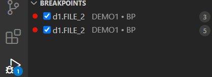

Debugging
With the debugging function, users can easily debug BASIC programs, as well as observe and track the results and changes to variables for each step when running a BASIC program.
The following U2 server versions and platforms are supported:
UniVerse
Versions: For offline mode debugging 11.3.2 or higher and for online mode debugging 11.4.1 and higher
Platforms: Windows, Linux, AIX
UniData
Versions: For offline mode debugging 8.2.4 or higher and for online mode debugging 8.3.1 and higher
Platforms: Windows, Linux, AIX
Note: For more details, please refer Rocket-MV-BASIC-Extension-features-support-matrix.
A high performance debugging feature
A high-performance debugging feature is supported on UniVerse 11.4.1 and UniData 8.3.1. To use this feature, you must upgrade to UniVerse 11.4.1 / UniData 8.3.1 or higher version. Please see Debugging Binaries Releases for more details.
Start Debugging
Note: You should not debug BASIC subroutines directly, because this not allowed in UniVerse and UniData.
Connecting to a U2 server account folder
Before using the debugging feature, you must connect to a U2 server account folder firstly. Please see the Connection section for offline mode and Online Editing for online mode to learn how to connect to a U2 server account.
Note: The debugging feature will not work if you only open a single BASIC program file in VS Code. You must open an account folder.
Debugging BASIC files
There are 2 methods to debug a BASIC program file: debugging without a launch file and debugging with a launch file.
Before debugging, open the BASIC program first.
Note: debugging a BASIC subroutine directly is not allowed.
Debugging without a launch file
Note : Debugging without a launch file works properly in offline mode only; in online mode, please create launch file.
-
Click the Run and Debug icon on from the left menu bar. The Run and Debug view will display if you have no
launch.jsonfile in your project. -
Click the Run and Debug button to start debugging the currently focused BASIC program file.
The BASIC program file will be compiled first. For UniData, there are different compilation flavors and it will read the compile flavor from basic.mvbasic.json, with the value set to: "ud_compile_flavor". Please see this section to set ud_compile_flavor value.
On successful compilation, the debugging process will stop at the first runnable line of code in the program file.
Debug with launch file
You have the option to configure the type and task parameters in the launch.json file which helps VS Code know how to run and debug your code.
launch.json file helps VSCode know how to run and debug your code.
launch.json in MVVS has the type and task parameters, it means that VSCode is first running a task before starting the debugging process.
type: The type parameter tells VS Code what type of code you're working with. Valid values are: MVBasic, Python.
task: The task parameter is a step that needs to happen before debugging starts, like preparing your code.
You have the option to tell VS Code which debugging settings to use in the launch.json file.
In the Run and Debug view, click the create a launch.json file link.
Select the MVBasic Debug from the Select environment dialog box.

A default debugging configuration file named launch.json is generated in directory .vscode and contains the following.
{
"version": "0.2.0",
"configurations": [
{
"type": "mvbasic",
"request": "launch",
"name": "Launch Program",
"program": "",
"stopOnEntry": true,
"preLaunchTask": "BASIC: Build",
"dependencies": [],
"arguments": ""
}
]
}
- "type": "mvbasic" is required to build BASIC program files.
- "request": keep this value "launch" to launch a program.
- "name": this is the name of the launch task. You can change the name to other values.
- "program": if this value is empty, current focused file will be debugged. You can also set this value to another BASIC program file's absolute path. This file will be compiled before debugging.
- "stopOnEntry": used to control whether the program will be stopped at the first runnable line when start debugging. Currently only true is supported.
- "preLaunchTask": this is used to run pre-required task before debugging. In our extension, we use this setting to compile the BASIC program in setting "program" first.
- "dependencies": put other BASIC program files' absolute paths here if they need to be compiled before debugging. For example, "C:\U2\UV\XDEMO\TEST".
- "arguments": put additional debugging online· here. Please refer to your UniVerse / UniData user documentation for more details. By default, this setting doesn’t appear in the configuration file, but can be added manually if needed.
To enable debugging in online mode, the
tasks.jsonfile is required.For online mode, create a build task as shown in Online Editing.
For more details on task refer Compile.
From the Run and Debug view, set the launch option to Launch Program. Then press the F5 button to start debugging.
Support Operations
The following debug operations are supported.
Note
In online mode, the source code is accessed virtually. When debugging starts, the source code always comes from the U2 debugger service, (which is why a different file is launched for debugging).
Setting break point
When debugging starts, you can set a break point by:
-
Clicking the head of a line
-
Pressing the F9 key for an in-focus line.

You can find all break points in BREAKPOINTS panel of the Run and Debug view.

Note
In online mode, a different file is launched for debugging, so and breakpoints are applied to that file as well. As a result, the user will see the same breakpoints in the "BREAKPOINTS" view, but in two different files.
The program will stop when the process encounters a break point.
Note: Condition breakpoints are not supported.
Continue
When the process encounters a break point, the program will stop running. You can press the F5 key or click the Continue button from the debug panel to continue running the program.
Note: Program cannot jump out of a subroutine through this operation in UniVerse.

Step over
The step over function allows you to run the program line-by-line. Press the F10 button or click the Step Over button from the debug panel to run one line of the program.
Note: Program cannot jump out of a subroutine through this operation in UniVerse.

Step into and step out
These two operations are still not stable. They partially work if breakpoints are set at CALL line. Please refer Known Issues.
Note: Program cannot jump out of a subroutine through Step Out operation in UniVerse.
Restart debug
Click restart button to restart debugging process.
Stop debugging
Click the Stop button to stop the debugging process.

View variables
When debugging starts, you can view all variables in the Run and Debug view.
You can also change a variable's value by double-clicking it in the Run and Debug view (this only works on UniVerse 11.4.1 / UniData 8.3.1).
If variables have no value or have not been initialized, the variable’s value is undefined.
Watch variables
You can also add variables to the WATCH panel.
Click the plus (+) button from the WATCH panel and enter the variable name to display the variable’s value.

Note: Only variables are supported. Expressions are not supported.
Handle input operation
You can switch to the VS Code terminal to handle an INPUT statement during BASIC program running.